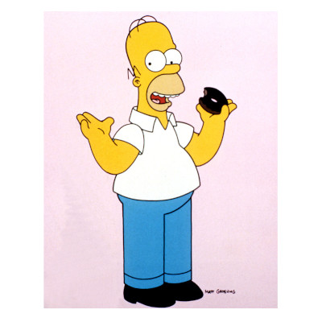

Homer
Homer on Simpsoneissa perheen isä, laiska mutta hyväntahtoinen mies, joka työskentelee ydinvoimalassa ja rakastaa olutta, ruokaa ja sohvalle rojahtamista.

Dan Castellaneta
Meemit



Homer on Simpsoneissa perheen isä, laiska mutta hyväntahtoinen mies, joka työskentelee ydinvoimalassa ja rakastaa olutta, ruokaa ja sohvalle rojahtamista.